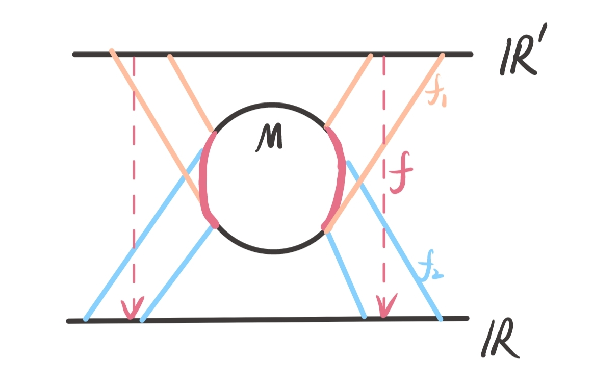
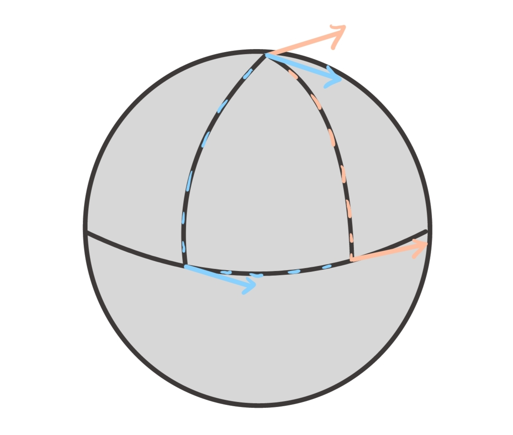
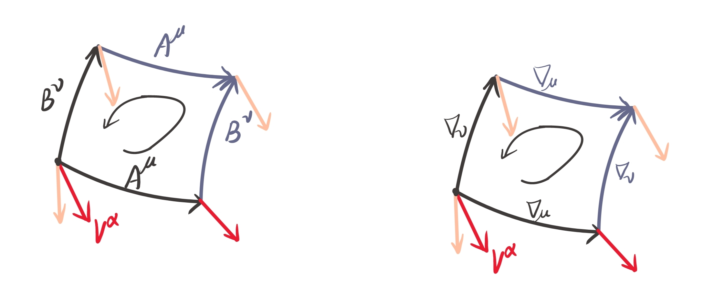

GR的数学基础
流形与张量场
基本概念
空间：由若干个（实）参数描述的一种点集
- 空间 $+$ 微分结构（可微性） ⇒ 流形 (manifold)
微分流形：每一部分都像 $\mathbb{R}^n+$ 相容性，即流形上的每一片（坐标卡）可以光滑地连接起来，所有的坐标卡覆盖整个流形的集合，称为 $M$ 的地图册（atlas）.
$$ \text{chart: 流形上一片区域映射到一组数（坐标）}, \quad \text{atlas: 所有chart光滑拼合} $$如图所示，对于微分流形 $M$，存在2个坐标卡 ${ x^\prime } , { x }$，对于其重叠区域（红色部分）存在光滑映射 $f: x^\prime \mapsto x$，则为光滑连接，即相容性 .
在 $2$ 个坐标系下
$$ x^\mu= \left\{ x^1, x^2, \dots , x^n \right\},\quad \tilde{x}^\mu= \left\{ \tilde{x}^1 , \tilde{x}^2 ,\dots , \tilde{x} ^n \right\} $$可以给出坐标变换
$$ \mathrm{d}\tilde{x}^\mu= \frac{{\partial \tilde{x}^\mu}}{\partial x^\nu}\mathrm{d}x^\nu~,\quad \frac{{\partial}}{\partial \tilde{x}^\mu}=\frac{{\partial x^\nu}}{\partial \tilde{x}^\mu}\frac{{\partial}}{\partial x^\nu}~. $$标量与张量1
- 满足如下坐标变换即为标量场：
- 逆变矢量场：
- 协变矢量场：
- $(p,q)$型张量场：
- 张量的定义并不要求在所有 $x$ 上满足上述坐标变换，如果只是一个点（一条曲线）满足，那么称其为该一点（曲线）上的张量，，但是张量场必须满足在整个流形上满足上述坐标变换 .
张量的性质
- 加减：同阶且指标相同的张量相加减仍为张量：$C_{\mu \nu}=A_{\mu \nu}\pm B_{\mu \nu}$ .
- 直乘：不同指标张量相乘结构认为张量，新的张量阶数为原张量阶数之和：$ C^{\mu} _{\ \nu} = A^\mu B _{\nu}$ .
- 缩并：$(p,q)$ 型张量有一上下相同的指标，代表对该指标进行求和，结果为 $(p-1,q-1)$ 型张量，例如，对于 $T^{\mu _{1} \dots \mu _{p}} _{\quad\quad;\nu _{1}\dots \nu _{q}}$ 有 $\mu _{p}=\nu _{q}=\sigma$
这对于任意位置 $\mu_{\alpha}=\nu_{\beta}=\sigma$ 仍然成立 .
- 对称张量：交换 $2$ 个指标仍然相等，以二阶张量为例，即 $T_{\mu \nu}=T_{\nu \mu}$ .
- 反对称张量：交换 $2$ 个指标互为相反，以二阶张量为例，即 $T_{\mu \nu}=-T_{\nu \mu}$ .
- 对称分解：任意二阶张量都可以唯一分解为对称部分 $S^{\mu \nu}$ 和反对称部分 $A^{\mu}$ 之和，即
- 反对称张量指标相同时为零，$A^{\mu \mu}=-A^{\mu \mu}=0$ .
- 反对称张量与对称张量缩并时为零，
- $\mathrm{dim};n$ 流形最高阶反对称张量为 $n$ 阶，且该张量只有一个独立分量 $(C_{n}^n=1)$ ， $n-1$ 阶反对称张量有 $C_{n}^{n-1}=n$ 个独立分量 ，$m$ 阶反对称张量有 $C_{n}^{m}$ 个独立分量 . 比如 $4$ 维流形 $2$ 阶反对称张量为 $4\times 4$ 矩阵，独立分量有 $C_{4}^2=6$ 个：
$3$ 阶反对称张量独立分量有 $C_{4}^3 = 4$ 个：
$$ A^{012},A^{013},A^{023},A^{123}~. $$$4$ 阶反对称张量独立分量有 $C_{4}^4=1$ 个，即 $A^{0123}$ ，任意重复指标都为 $0$ ，指标互换位置都可以通过反对称张量性质得出前面系数是 $+1,\text{or}-1$ .
仿射联络
在欧几里得空间或平直时空中，矢量的加减使用中学学过的三角形定理或平行四边形法则即可，这也表明矢量的平移是无关路径的，即使矢量定义在某一个点上（比如某个力矢量就定义在该力的作用点上）。然而，在广义相对论的几何语言中，由于需要描述弯曲时空，我们会发现不同路径下平移矢量会得到不同的结果2，例如二维球面下，赤道上矢量沿经线移动到北极的平移矢量与沿赤道移动一段距离再沿着经线移动到北极的平移矢量并不相同，如下图所示。
由此，我们必须讨论矢量沿某一曲线平移前后的关系，这就需要引入仿射联络，假设 $P$ 点的矢量 $V^\mu(P)$ 沿无穷小位移 $\mathrm{d}x^\nu$ 移动到 $Q$ 点 $V^\mu(P\to Q)$，那么它们的区别应该正比于 $\mathrm{d}x^\nu$ 和原矢量 $V^\mu(P)$：
$$ V_{\mu}(P\to Q)-V_{\mu}(P) = \Gamma^\lambda_{\mu \nu}V_\lambda(P)\mathrm{d}x^\nu~, $$其中系数 $\Gamma^\lambda_{\mu \nu}$就是所谓仿射联络 .
根据矢量场坐标变换关系可以给出仿射联络的坐标变换关系
$$ \tilde{\Gamma}^\lambda_{\mu \nu}=\frac{{\partial^2 x^\gamma}}{\partial \tilde{x}^\mu \tilde{x}^\nu} \frac{{\partial \tilde{x}^\lambda}}{\partial x^\gamma} + \Gamma^\gamma_{\alpha\beta} \frac{{\partial \tilde{x}^\lambda}}{\partial x^\gamma} \frac{{\partial {x}^\alpha}}{\partial \tilde{x}^\mu} \frac{{\partial {x}^\beta}}{\partial \tilde{x}^\nu}~. $$计算过程如下：
在坐标变换下
$$ \begin{aligned} \tilde{V}_{\mu}(P\to Q) - \tilde{V}_{\mu}(P)&=\tilde{\Gamma}^\lambda_{\mu \nu}V_{\lambda} (P)\mathrm{d}\tilde{x}^\nu \\ V_{\gamma}(P-Q) \frac{{\partial x^\gamma}}{\partial \tilde{x}^\mu}\big|_{Q}-V_{\alpha}(P) \frac{{\partial x^\alpha}}{\partial \tilde{x}^\mu }\big|_P &=\tilde{\Gamma}^\lambda_{\mu \nu} \frac{{\partial x^\gamma}}{{\partial \tilde{x}^\lambda}}V_{\gamma}(P) \frac{{\partial \tilde{x}^\nu}}{\partial x^\beta}\mathrm{d}x^\beta \\ V_{\gamma}(P ) \left(\frac{{\partial^2 x^\gamma}}{\partial \tilde{x}^\mu \partial \tilde{x}^\nu} \right)_{P} \mathrm{d}\tilde{x}^\nu+V_{\alpha}(P\to Q ) \frac{{\partial x^\alpha}}{\partial \tilde{x}^\mu}\bigg|_{P} - V_{\alpha}(P) \frac{{\partial x^\alpha}}{\partial \tilde{x}^\mu }\big|_P &= \frac{{\partial x^\gamma}}{{\partial \tilde{x}^\lambda}} \frac{{\partial \tilde{x}^\nu}}{\partial x^\beta}\tilde{\Gamma}^\lambda_{\mu \nu} V_{\gamma}(P) \mathrm{d}x^\beta \\ V_{\gamma}(P)\left[ \left(\frac{{\partial^2 x^\gamma}}{\partial \tilde{x}^\mu \partial \tilde{x}^\nu} \right)_{P} \left( \frac{{\partial \tilde{x}^\nu}}{\partial x^\beta} \right) + \Gamma^\gamma_{\alpha\beta}\left( \frac{{\partial x^\alpha}}{\partial \tilde{x}^\mu} \right) \right]\mathrm{d}x^\beta &=\frac{{\partial x^\gamma}}{{\partial \tilde{x}^\lambda}} \frac{{\partial \tilde{x}^\nu}}{\partial x^\beta}\tilde{\Gamma}^\lambda_{\mu \nu} V_{\gamma}(P) \mathrm{d}x^\beta \end{aligned} $$上式需要对任意的 $V_{\gamma}(P)$ 和 $\mathrm{d}x^\beta$ 成立，那么有
$$ \begin{aligned} \left(\frac{{\partial^2 x^\gamma}}{\partial \tilde{x}^\mu \partial \tilde{x}^\nu} \right)_{P} \left( \frac{{\partial \tilde{x}^\nu}}{\partial x^\beta} \right) + \Gamma^\gamma_{\alpha\beta}\left( \frac{{\partial x^\alpha}}{\partial \tilde{x}^\mu} \right) =\frac{{\partial x^\gamma}}{{\partial \tilde{x}^\lambda}} \frac{{\partial \tilde{x}^\nu}}{\partial x^\beta}\tilde{\Gamma}^\lambda_{\mu \nu} \\ \implies \tilde{\Gamma}^\lambda_{\mu \nu}=\frac{{\partial^2 x^\gamma}}{\partial \tilde{x}^\mu \tilde{x}^\nu} \frac{{\partial \tilde{x}^\lambda}}{\partial x^\gamma} + \Gamma^\gamma_{\alpha\beta} \frac{{\partial \tilde{x}^\lambda}}{\partial x^\gamma} \frac{{\partial {x}^\alpha}}{\partial \tilde{x}^\mu} \frac{{\partial {x}^\beta}}{\partial \tilde{x}^\nu}~. \end{aligned} $$从上式也可以得知，联络并非张量 .
对于逆变矢量，可以验证其关系为
$$ V^\mu(P\to Q)-V^\mu(P)=-\Gamma^\mu_{\lambda \nu}V^{\lambda}\mathrm{d}x^\nu~. $$在 $x^\prime$ 坐标系中，平移公式为：
$$ V'^{\mu'}(P\to Q) = V^{\mu'}(P) - \Gamma^{\mu'}_{\alpha'\beta'}(P) V'^{\alpha'}(P) \mathrm{d}x'^{\beta'}. $$利用张量变换律：
$$ V'^{\mu'}(P) = \frac{\partial x^{\mu'}}{\partial x^\mu} V^\mu(P), \quad \mathrm{d}x'^{\beta'} = \frac{\partial x'^{\beta'}}{\partial x^\nu} \mathrm{d}x^\nu. $$以及
$$ \Gamma^{\mu'}_{\alpha'\beta'} = \frac{\partial x^{\mu'}}{\partial x^\mu} \frac{\partial x^\alpha}{\partial x^{\alpha'}} \frac{\partial x^\beta}{\partial x^{\beta'}} \Gamma^\mu_{\alpha\beta} + \frac{\partial x^{\mu'}}{\partial x^\mu} \frac{\partial^2 x^\mu}{\partial x^{\alpha'} \partial x^{\beta'}}. $$带入得
$$ \begin{aligned} V'^{\mu'}(P\to Q) &= \frac{\partial x'^{\mu'}}{\partial x^\mu} V^\mu(P) - \left( \frac{\partial x'^{\mu'}}{\partial x^\mu} \frac{\partial x^\alpha}{\partial x'^{\alpha'}} \frac{\partial x^\beta}{\partial x'^{\beta'}} \Gamma^\mu_{\alpha\beta} + \frac{\partial x'^{\mu'}}{\partial x^\mu} \frac{\partial^2 x^\mu}{\partial x'^{\alpha'} \partial x'^{\beta'}} \right) V^{\alpha'}(P) \mathrm{d}x'^{\beta'} \\ & = \frac{\partial x^{\mu'}}{\partial x^\mu} V^\mu(P) - \frac{\partial x'^{\mu'}}{\partial x^\mu} \frac{\partial x^\alpha}{\partial x'^{\alpha'}} \frac{\partial x^\beta}{\partial x'^{\beta'}} \Gamma^\mu_{\alpha\beta} \frac{\partial x'^{\alpha'}}{\partial x^\alpha} V^\alpha(P) \frac{\partial x'^{\beta'}}{\partial x^\nu} \mathrm{d}x^\nu \\ &\quad\quad- \frac{\partial x'^{\mu'}}{\partial x^\mu} \frac{\partial^2 x^\mu}{\partial x'^{\alpha'} \partial x'^{\beta'}} \frac{\partial x'^{\alpha'}}{\partial x^\alpha} V^\alpha(P) \frac{\partial x'^{\beta'}}{\partial x^\nu} \mathrm{d}x^\nu \\ & = \frac{\partial x'^{\mu'}}{\partial x^\mu} V^\mu(P) - \frac{\partial x'^{\mu'}}{\partial x^\mu} \Gamma^\mu_{\alpha\nu} V^\alpha(P) dx^\nu-\frac{\partial x'^{\mu'}}{\partial x^\mu} \frac{\partial}{\partial x^\nu} \left( \frac{\partial x^\mu}{\partial x^\alpha} \right) V^\alpha(P) \mathrm{d}x^\nu~. \end{aligned} $$由于 $\frac{\partial}{\partial x^\nu} \left( \frac{\partial x^\mu}{\partial x^\alpha} \right)=\partial_{\nu} \delta^\mu_{;\alpha}=0$ ，所以有
$$ V'^{\mu'}(P\to Q) = \frac{\partial x'^{\mu'}}{\partial x^\mu}\bigg[V^\mu(P) - \Gamma^\mu_{\alpha\nu} V^\alpha(P) dx^\nu\bigg] = {\partial x'^{\mu'}\over \partial x^{\nu}} V^\nu(P\to Q)~. $$零联络定理
设坐标 $x^\mu$ 下 $P$ 点对称联络 $\Gamma_{\mu \nu}^\lambda(P)$ ，则总能找到坐标变换 $x^\mu \mapsto \tilde{x}^\mu$ 使得 $\tilde{\Gamma}^\lambda_{\mu \nu}=0$ .
证明如下
设坐标变换
$$ x^\mu - x_{P}^\mu = \tilde{x}^\mu + \frac{1}{2}C_{\alpha\beta}^\mu \tilde{x}^\alpha \tilde{x}^\beta~,\quad C_{\alpha\beta}^\mu = C_{\beta\alpha}^\mu $$左边在 $P$ 点求导，同时保证在新坐标系下 $P$ 点为原点 $\tilde{x}^\mu_{P }=0$：
$$ \left( \frac{ \partial x^\mu}{\partial \tilde{x}^\nu} \right)_{P} = \delta^\mu_{\;\nu}+ C^\mu_{\alpha \beta}\delta^\beta_{\nu}\tilde{x}^\alpha\big|_{\tilde{x}^\alpha_{P}=0} = \delta^\mu_{\;\nu} ~, $$上式逆矩阵也满足 $\left( \frac{\partial\tilde{x}^\mu}{\partial x^\nu} \right)=\delta^\mu_{;\nu}$，同时，二阶导数为
$$ \left( \frac{\partial^2 x^\mu}{\partial \tilde{x}^\alpha \partial\tilde{x}^\beta } \right)\bigg|_{P} = C^\mu_{\alpha\beta}~, $$根据联络坐标变换公式
$$ \begin{aligned} \tilde{\Gamma}^\lambda_{\mu \nu}(P)&={\partial^2 x^\alpha\over \partial \tilde{x}^\mu \tilde{x}^\nu}{\partial \tilde{x}^\lambda\over \partial x^\alpha}\bigg|_{P} + \Gamma^\alpha_{\rho\sigma}(P) {\partial \tilde{x}^\lambda\over \partial x^\alpha}{\partial x^\rho\over \partial \tilde{x}^\mu} {\partial x^\sigma\over \partial x^\nu} \\ &=C^\alpha_{\mu \nu}\delta^\lambda_{\;\alpha}+\Gamma^\alpha_{\rho\sigma}\delta^\lambda_{\;\alpha}\delta^\rho_{\;\mu}\delta^\sigma_{\;\nu} \\ &=C^\lambda_{\mu \nu}+\Gamma^\lambda_{\mu \nu}=0 \\ & \implies C^\lambda_{\mu \nu}=-\Gamma^\lambda_{\mu \nu}~. \end{aligned} $$综上，则有坐标变换 $x^\mu \mapsto \tilde{x}^\mu-\frac{1}{2}\Gamma^\mu_{\alpha\beta}\tilde{x}^\alpha \tilde{x}^\beta=x^\mu-x^\mu_{P}$，使得在 $\tilde{x}$ 坐标系下 $\tilde{\Gamma}^\lambda_{\mu \nu}=0$ .
零联络定理可以有以下性质或推论：
- 不依赖于度规；
- 即使存在挠率 $T^\lambda_{;\mu \nu}\ne 0$ 也可以使得 $\Gamma^\lambda_{\mu \nu}$ 对称部分为 $0$ ；
- 取 $\Gamma (P)=0$，由 $\nabla_{\mu}g_{\alpha\beta}=\partial_{\mu}g_{\alpha\beta}=0$，可知 $g_{\alpha\beta}=g_{\mu \nu}(P)+g^{(1)}+g^{(2)}+\dots$，由于 $g^{(1)}\propto \partial_{\mu}g_{\alpha\beta}=0$，那么对于一个时空点 $P$ 总（近似）存在局域惯性系 $g_{\alpha\beta}(P)\simeq \eta_{\alpha\beta}$ . 这与等效原理相符，即在小范围内，任何引力场都可以被视为局部的惯性参考系。
协变导数
在欧几里得空间/平直时空中向量场的导数就是 $\lim_{ \delta x \to 0 }\frac{\vec{F}(x+\delta x)-\vec{F}(x)}{\delta x}$，即使存在坐标变换这里的矢量差仍是良好定义的. 然而在流形中，定义协变导数需要利用平行移动来作矢量差，这样才能使得坐标变换后仍然成立. 记相邻两点 $P$ 与 $Q = P + \mathrm{d}x$，那么对于协变矢量场 $V_{\nu}(x)$在 $P$ 点的协变导数为：
$$ \nabla_{\mu}V_{\nu}(P) = \frac{{V_{\nu}(Q)-V_{\nu}(P\to Q) }}{\mathrm{d}x^\nu}=\partial_{\mu}V_{\nu}-\Gamma^\lambda_{\mu \nu}V_{\lambda}~. $$-
协变导数满足莱布尼兹法则 .
-
对于标量：$\nabla_{\mu} f= \partial_{\mu} f$ ，且 $\nabla_{\mu} f$ 为协变矢量 . 对于挠率 $T^\lambda_{\ \mu \nu}=\Gamma^\lambda_{\mu \nu}-\Gamma^\lambda_{\nu \mu}=0$的情况，$\nabla_{\mu}\nabla_{\nu}f=\nabla_{\nu}\nabla_{\mu}f$ .
-
对于逆变矢量：
- $(p,q)$ 型张量：
- Kroneker 张量 $\delta^\mu_{;\nu}(x)$ 的协变导数为 $0$
-
记号约定，协变导数 $\nabla_{\mu}A\equiv A_{;\mu}$；普通导数 $\partial_{\mu}A\equiv A_{,\mu}$ .
-
平行移动，对于定义在曲线 $\gamma^\mu(\lambda)$ 上的切矢量 $V^\mu= \frac{{\mathrm{d}x^\mu}}{\mathrm{d}\lambda}$，张量 $T^\alpha_{{;\beta}}$ 沿着曲线 $\gamma^\mu(\lambda)$ 平行移动定义为
度规张量
度规（Metric）
度规，顾名思义就是长度的规定。在流形上引入度规场及其规定的不变距离就构成了（伪）黎曼流形（黎曼空间）。
使用度规张量 $g_{\mu \nu}$ 定义流形上相邻两点$(\mathrm{d}x^\mu)$之间的距离
$$ \mathrm{d}s^2 = g_{\mu \nu}\mathrm{d}x^\mu \mathrm{d}x^\nu~, $$由于距离的规定与$\mu,\nu$ 指标是对称的，那么不妨认为 $g_{\mu \nu}$ 就是对称张量 .
- 黎曼空间，线元 $\mathrm{d}s^2$ 正定 .
- 伪黎曼空间，线元非正定 .
- $3~ \mathrm{dim}$ 欧式空间笛卡尔坐标系的度规：
- $3~\mathrm{dim}$ 欧式空间球坐标系的度规：
- $4~\mathrm{dim}$ 平直时空度规 $(c=1)$：
- 施瓦西度规：
- FRLW 度规：
张量指标升降
在黎曼空间中，使用度规 $g_{\mu \nu}$ 及其逆 $(g^{-1})^{\mu \nu}$ 进行升降指标 .
- 度规为非退化矩阵，满足
- 对任意张量
- 矢量长度平方
度规相容条件
当联络规定的平移操作保持矢量长度不变时，则称联络与度规适配，从另一个角度，即度规场平移不变
$$ g_{\mu \nu}(P\to Q) = g_{\mu \nu}(P) \implies \nabla_{\mu}g_{\alpha\beta} = 0~, $$其中 $\nabla_{\mu}g_{\alpha\beta} = 0$ 称为度规相容条件 .
可以证明满足 $\nabla_{\mu} g_{\alpha\beta}$ 的联络唯一存在，其为 Christoffel 联络
$$ \Gamma^\lambda_{\mu \nu} = \frac{1}{2}g^{\lambda \sigma}\left( \partial_{\mu}g_{\sigma \nu}+\partial_{\nu}g_{\mu\sigma}-\partial_{\sigma}g_{\mu \nu} \right)~. $$proof:
$$ \begin{aligned} \nabla_{\mu}g_{\alpha\beta}&=\partial_{\mu}g_{\alpha\beta}-{\color{orange}\Gamma^\alpha_{\mu \alpha}g_{\lambda \beta}}-{\color{blue} \Gamma^\lambda_{\mu\beta}g_{\alpha\lambda}}=0 \\ \nabla_{\alpha}g_{\beta \mu}&=\partial_{\alpha}g_{\beta\mu} - {\color{red} \Gamma^{\lambda}_{\alpha\beta}g_{\lambda\mu}} - {\color{orange} \Gamma^{\lambda}_{\alpha\mu}g_{\beta\lambda}}=0 \\ \nabla_{\beta}g_{\mu\alpha}&=\partial_{\beta}g_{\mu\alpha} - {\color{blue} \Gamma^{\lambda}_{\beta\mu}g_{\lambda\alpha}} - {\color{red} \Gamma^{\lambda}_{\beta\alpha}g_{\mu\lambda}}=0 \\ -\nabla_{\mu}g_{\alpha\beta}+\nabla_{\alpha}g_{\beta \mu}+\nabla_{\beta}g_{\mu\alpha}&=-\partial_{\mu}g_{\alpha\beta}+\partial_{\alpha}g_{\beta\mu}+\partial_{\beta}g_{\mu\alpha}-2{\color{red}\Gamma^\lambda_{\alpha\beta}g_{\lambda \mu}}=0 \\ \implies \Gamma^\lambda_{\mu \nu} &= \frac{1}{2}g^{\lambda \sigma}\left( \partial_{\mu}g_{\sigma \nu}+\partial_{\nu}g_{\mu\sigma}-\partial_{\sigma}g_{\mu \nu} \right)~. \end{aligned} $$测地线，曲率
测地线
在欧式空间中，直线可以认为任意相邻的 $2$ 点的切矢量都互相平行的曲线，那么其在流形上的推广就是自平行线(流形上最“直”的线) .
对于曲线上任意两点 $P,Q$，切矢量的平行条件为
$$ A^\mu(Q) = \left[ 1+f(\lambda)\mathrm{d}\lambda \right]A^\mu(P\to Q)~, $$其中 $A^\mu= \frac{\mathrm{d}x^\mu}{\mathrm{d}\lambda}$，这表明曲线上切矢量只有“长度”变化，没有“方向”的变化. 在 $P,Q$ 两点无限接近的情况下，根据
$$ A_{\mu} (P\to Q) = \frac{{\mathrm{d}x^\mu}}{\mathrm{d}\lambda}-\Gamma^\mu_{\alpha\beta} \frac{{\mathrm{d}x^\alpha}}{\mathrm{d}\lambda} \frac{{\mathrm{d}x^\beta}}{\mathrm{d}\lambda}\mathrm{d}\lambda~, $$切矢量在 $P$ 点作泰勒展开
$$ A^\mu(Q) = A^\mu (P) + \frac{\mathrm{d}A^\mu(P)}{\mathrm{d}\lambda}\mathrm{d}\lambda = \frac{\mathrm{d}x^\mu}{\mathrm{d}\lambda}+ \frac{{\mathrm{d}^2 x^\mu}}{\mathrm{d}\lambda^2}\mathrm{d}\lambda~, $$那么有
$$ \begin{aligned} \left[ 1+f(\lambda)\mathrm{d}\lambda \right] \cdot \left[ \frac{{\mathrm{d}x^\mu}}{\mathrm{d}\lambda}-\Gamma^\mu_{\alpha\beta} \frac{{\mathrm{d}x^\alpha}}{\mathrm{d}\lambda} \frac{{\mathrm{d}x^\beta}}{\mathrm{d}\lambda}\mathrm{d}\lambda \right] &=\frac{\mathrm{d}x^\mu}{\mathrm{d}\lambda}+ \frac{{\mathrm{d}^2 x^\mu}}{\mathrm{d}\lambda^2}\mathrm{d}\lambda \\ f(\lambda) \frac{{\mathrm{d}x^\mu}}{\mathrm{d}\lambda} &= \frac{\mathrm{d}^2 x^\mu }{\mathrm{d}\lambda^2} + \Gamma^\mu_{\alpha\beta} \frac{\mathrm{d}x^\alpha}{\mathrm{d}\lambda} \frac{{\mathrm{d}x^\beta}}{\mathrm{d}\lambda} ~, \end{aligned} $$上式即为测地线方程，且只和仿射联络的对称部分有关（反对称部分缩并为 $0$ ）.
仿射参量
曲线的参数 $\lambda$ 是任意的，如果选取合适的参数 $\lambda(\sigma)$ 满足
$$ \frac{\mathrm{d}^2\sigma}{\mathrm{d}\lambda^2} - f(\lambda) \frac{\mathrm{d}\sigma}{\mathrm{d}\lambda}=0~, $$可以化简测地线方程为（证明见后文）
$$ \frac{\mathrm{d}^2 x^\mu}{\mathrm{d}\sigma^2} + \Gamma^\mu_{\alpha\beta} \frac{\mathrm{d}x^\alpha}{\mathrm{d}\sigma} \frac{\mathrm{d}x^\beta}{\mathrm{d}\sigma} = 0~. \tag{*} $$这样的 $\sigma$ 称为曲线的仿射参量 . 此外，如果取 $\tau$ 为仿射参量也可以写为等价形式
$$ \begin{aligned} {\color{Green} U ^{\nu }\nabla_{\nu} U ^{\mu } } &= U ^{\nu } \partial_{\nu} U^{\mu } +U^{\nu }\Gamma ^{\mu }_{\nu\lambda}U^{\lambda } \\ & = \frac{\mathrm{d x^{\nu }}}{\mathrm{d}\tau} \frac{\partial}{\partial x^{\nu }} \frac{\mathrm{d}x^{\mu }}{\mathrm{d} \tau} + \Gamma ^{\mu }_{\nu\lambda} \frac{\mathrm{d}x^{\nu }}{\mathrm{d}\tau} \frac{\mathrm{d}x^{\lambda }}{\mathrm{d}\tau} \\ &{\color{Green} =\frac{\mathrm{d}^2 x^\mu}{\mathrm{d}\tau^2} + \Gamma^\mu_{\nu\lambda} \frac{\mathrm{d}x^\nu}{\mathrm{d}\tau} \frac{\mathrm{d}x^\lambda}{\mathrm{d}\tau} = 0 }~. \end{aligned} $$其中 $U^{\mu }=\frac{\mathrm{d}x^{\mu }}{\mathrm{d}\tau}$ 为四速度 .
- 从上式可以看到，取仿射参量 $\sigma$ 为曲线参数化时 $f(\sigma)=0$ 平行条件变为
也就是说曲线上切矢量不仅没有“方向”的变化，也没有“长度”的变化.
- 仿射参量只对测地线有定义，因为只有测地线的切矢量满足自平行条件 .
- 反射参量依赖于流形上给定的联络，从 $\frac{\mathrm{d}^2\sigma}{\mathrm{d}\lambda}=f(\lambda)\frac{\mathrm{d}\sigma}{\mathrm{d}\lambda},f(\lambda)\propto \Gamma$ 可以看到 .
- 仿射参量并不唯一，对于 $\tilde{\sigma}=a\sigma+b$ 仍为仿射参量，对于 $\tilde{\sigma}$ 这是显然对 $*$ 成立的.
对 $*$ 的证明 对于 $\lambda = \lambda(\sigma)$，有
$$ \begin{aligned} \frac{\mathrm{d}x^\mu}{\mathrm{d}\lambda} &=\frac{\mathrm{d}x^\mu}{\mathrm{d}\sigma} \frac{\mathrm{d}\sigma}{\mathrm{d}\lambda}~, \\ \frac{\mathrm{d}^2x^\mu}{\mathrm{d}\lambda^2} &= \frac{\mathrm{d}\sigma}{\mathrm{d}\lambda} \frac{\mathrm{d}}{\mathrm{d}\sigma} \left( \frac{\mathrm{d}x^\mu}{\mathrm{d}\sigma} \frac{\mathrm{d}\sigma}{\mathrm{d}\lambda} \right) = \left( \frac{\mathrm{d}\sigma}{\mathrm{d}\lambda} \right)^2 \frac{\mathrm{d}^2x^\mu}{\mathrm{d}\sigma^2} + \frac{\mathrm{d}x^\mu}{\mathrm{d}\sigma} \frac{\mathrm{d}^2\sigma}{\mathrm{d}\lambda^2}~, \\ \implies& \left( \frac{\mathrm{d}\sigma}{\mathrm{d}\lambda} \right)^2 \frac{\mathrm{d}^2x^\mu}{\mathrm{d}\sigma^2} + \frac{\mathrm{d}x^\mu}{\mathrm{d}\sigma} {\color{orange} \frac{\mathrm{d}^2\sigma}{\mathrm{d}\lambda^2}} + \Gamma^\mu_{\alpha\beta} \frac{\mathrm{d}x^\alpha}{\mathrm{d}\sigma} \frac{\mathrm{d}x^\beta}{\mathrm{d}\sigma} \left( \frac{\mathrm{d}\sigma}{\mathrm{d}\lambda} \right)^2 = {\color{orange} f(\lambda) \left( \frac{\mathrm{d}\sigma}{\mathrm{d}\lambda} \right) }\frac{\mathrm{d}x^\mu}{\mathrm{d}\sigma} \end{aligned} $$根据 $\frac{\mathrm{d}^2\sigma}{\mathrm{d}\lambda^2} - f(\lambda) \frac{\mathrm{d}\sigma}{\mathrm{d}\lambda}=0$ 可得
$$ \frac{\mathrm{d}^2 x^\mu}{\mathrm{d}\sigma^2} + \Gamma^\mu_{\alpha\beta} \frac{\mathrm{d}x^\alpha}{\mathrm{d}\sigma} \frac{\mathrm{d}x^\beta}{\mathrm{d}\sigma} = 0~. $$时空结构
曲线的分类
$$ \mathrm{d}s^2 = -\mathrm{d}\tau^2=-\mathrm{d}t^2+\mathrm{d}r^2+r^2\mathrm{d}\Omega^2= \left\{ \begin{matrix} -1~, &\text{类时(time-like)曲线} \\ 0~, &\text{类光/零 (null)曲线}\\ 1~, &\text{类空(space-like)曲线} \end{matrix} \right. $$- 对于类时曲线，一般使用固有时 $\tau$ 作为仿射参量，测地线为最长的线 .
- 对于类空曲线，一般使用固有长度 $s$ 作为仿射参量，测地线为最短的线 .
- 测地完备 (geodesically complete)，一个时空流形上所有测地线都可以任意延申 .
- 测地不完备 (geodesically incomplete)，一个时空流形存在测地线无法任意延申（碰到奇点） .
更物理的角度看测地线的意义，可以使用自由点粒子的作用量进行分析
$$ S = -m \int_{A}^{B}\mathrm{d}\tau = -m \int_{A}^{b} \sqrt{ -g_{\mu \nu} \frac{\mathrm{d}x^\mu}{\mathrm{d}\lambda} \frac{\mathrm{d}x^\nu}{\mathrm{d}\lambda} } \, \mathrm{d}\lambda~, $$点粒子的运动曲线称为“世界线”，定义 $V^\mu = \frac{\mathrm{d}x^\mu}{\mathrm{d}\lambda}$ 为世界线的切矢，同时描述粒子的世界线是一维的，可以定义标架场 3
$$ e(\lambda) \equiv \frac{1}{m} \sqrt{ -g_{\mu \nu}\frac{\mathrm{d}x^\mu}{\mathrm{d}\lambda} \frac{\mathrm{d}x^\nu}{\mathrm{d}\lambda} } = \frac{1}{m} \sqrt{ -g_{\mu \nu}V^\mu V^\nu }= \frac{1}{m} \frac{\mathrm{d}\tau}{\mathrm{d}\lambda} ~. $$作用量可以重新写为
$$ S = \frac{1}{2} \int_{\lambda_{B}}^{\lambda_{A}}\mathrm{d}\lambda g_{\mu \nu}V^\mu V^\nu e^{-1}(\lambda)-m^2 e(\lambda) \, . $$对 $x^\mu$ 变分
$$ \begin{aligned} \frac{\delta S}{\delta x^\mu} &= \frac{1}{2} \int_{\lambda_{B}}^{\lambda_{A}} \, \mathrm{d}\lambda \left[ 2e^{-1}(\lambda)g_{\mu \nu} \frac{\mathrm{d \delta x^\mu}}{\mathrm{d}\lambda}V^\nu+e^{-1}(\lambda) \delta g_{\mu \nu}V^\mu V^\nu \right] \\ &=\frac{1}{2} \int_{\lambda_{B}}^{\lambda_{A}} \, \mathrm{d}\lambda \left[ -2\frac{\mathrm{d}}{\mathrm{d}\lambda}\left( e^{-1}(\lambda)g_{\mu\alpha} \frac{\mathrm{d}x^\mu}{\mathrm{d}\lambda} \right)\delta x^\alpha+e^{-1}(\lambda)\partial_{\alpha}g_{\mu \nu}V^\mu V^\nu\delta x^\alpha \right] =0~, \\ \implies 0&= \partial_{\alpha}g_{\mu \nu} V^\mu V^\nu - 2e(\lambda)\frac{\mathrm{d}}{\mathrm{d}\lambda}\left( e^{-1}(\lambda)g_{\mu\alpha} V^\mu \right) \\ & = \partial_{\alpha}g_{\mu \nu} V^\mu V^\nu - 2 \partial_{\nu}g_{\mu\alpha}V^\mu V^\nu-2g_{\mu\alpha}\frac{\mathrm{d}V^\mu}{\mathrm{d}\lambda}+2e^{-1}(\lambda) \frac{\mathrm{d}e(\lambda)}{\mathrm{d}\lambda}g_{\mu\alpha} \frac{\mathrm{d}x^\mu}{\mathrm{d}\lambda}~, \\ \implies & g_{\mu\alpha} \frac{\mathrm{d}V^\mu}{\mathrm{d}\lambda} + \partial_{\nu}g_{\mu\alpha} V^\mu V^\nu - \frac{1}{2}\partial_{\alpha}g_{\mu \nu} V^\mu V^\nu = 2 e^{-1}(\lambda) \frac{\mathrm{d}e(\lambda)}{\mathrm{d}\lambda}g_{\mu\alpha}V^\mu~. \end{aligned} $$上式中第二项 $\mu,\nu$ 指标对称
$$ \partial_{\nu}g_{\mu\alpha} V^\mu V^\nu = \frac{1}{2}\left[ \partial_{\nu}g_{\mu\alpha} V^\mu V^\nu + \partial_{\mu}g_{\nu\alpha} V^\nu V^\mu \right] $$那么有
$$ \begin{aligned} g_{\mu\alpha} \frac{\mathrm{d}V^\mu}{\mathrm{d}\lambda} + \partial_{\nu}g_{\mu\alpha} V^\mu V^\nu - \frac{1}{2}\partial_{\alpha}g_{\mu \nu} V^\mu V^\nu &= g_{\mu\alpha} \frac{\mathrm{d}V^\mu}{\mathrm{d}\lambda} + \frac{1}{2}\left[ \partial_{\nu}g_{\mu\alpha} V^\mu V^\nu + \partial_{\mu}g_{\nu\alpha} -\partial_{\alpha}g_{\mu \nu} \right] V^\nu V^\mu \\ &=g_{\mu\alpha} \frac{\mathrm{d}V^\mu}{\mathrm{d}\lambda} + g_{\mu\alpha}\cdot \frac{1}{2}g^{\mu\beta}\left[ \partial_{\nu}g_{\rho\beta}+\partial_{\rho}g_{\nu\beta}-\partial_{\beta}g_{\nu \rho} \right] V^\nu V^\rho \\ \implies& \frac{\mathrm{d}V^\mu}{\mathrm{d}\lambda}+\Gamma^\mu_{\nu \rho}V^\nu V^\rho = f(\lambda)V^\mu~, \end{aligned} $$其中 $f(\lambda) = \left( e^{-1}\frac{\mathrm{d}e}{\mathrm{d}\lambda} \right)$ ，如果令 $f(\lambda) = 0$ ，在类时曲线中可以得到 $\lambda \propto \tau$，那么把固有时 $\tau$ 作为仿射参数是一个自然的选择；如果是类空曲线，则有 $e(\lambda) = \frac{1}{m} \sqrt{ g_{\mu \nu}\frac{\mathrm{d}x^\mu}{\mathrm{d}\lambda} \frac{\mathrm{d}x^\nu}{\mathrm{d}\lambda} }$ 保证根号内为正实数，那么选取 $\lambda=s$ 是一个自然的选择 .
定义 $\frac{\mathrm{D}}{\mathrm{d}\lambda}V^\mu \equiv \frac{\mathrm{d}V^\mu}{\mathrm{d}\lambda}+\Gamma^\mu_{\alpha\beta}V^{\alpha}V^\beta$，对于世界线为类时曲线的粒子而言
$$ a^\mu = \frac{\mathrm{D}}{\mathrm{d}\tau}u^\mu = 0~, $$说明测定线的物理意义就是粒子不受外力（除引力外的力）时行走的路线 .
黎曼曲率张量4
在弯曲时空，如果一个矢量 $V^\alpha$ 沿无穷小的一个圈，如图所示，先沿 $A^\mu,B^\nu$ 平行移动，再沿 $A^\mu,B^\nu$ 平行移动回原点，会使得平行移动后与移动前有差异 $\delta V^\alpha$，这个差异与 $A^\mu,B^\nu$ 以及矢量 $\hat{V}$ 本身成正比，且应该是坐标无关的，故可以用一个张量衡量这个差异，就是所谓黎曼曲率张量：
$$ \delta V^\alpha = R^\alpha_{\;\beta\mu \nu} V^\beta A^\mu B^\nu~. $$从上面不难看出，黎曼曲率张量与 $A^\mu,B^\nu$ 的顺序有关，有
$$ R^\alpha_{\;\beta \nu \mu}=-R^\alpha_{\;\beta \mu \nu}~. $$(这 $2$ 幅图仅仅为了表达曲率而把矢量画得弯曲.)
然而，第一个式子的计算略显繁琐，根据平行移动的定义 $A^\mu \nabla_{\mu}V^\alpha=0$ ，那么我们可以用协变导数 $\nabla_{\mu},\nabla_{\nu}$ 来代替 $A^\mu, B^\nu$. 故刻画一个流形的曲率，可以用协变导数的对易子5
$$ \begin{aligned} [\nabla_{\mu},\nabla_{\nu}]V^\alpha&=R^\alpha_{\;\beta \mu \nu}V^\beta~, \\ \implies R^\alpha_{\;\beta \mu \nu} &= \partial_{\mu}\Gamma^\alpha_{\nu\beta}-\partial_{\nu}\Gamma^\alpha_{\mu\beta}+\Gamma^\alpha_{\mu\sigma}\Gamma^\sigma_{\nu\beta}-\Gamma^\alpha_{\nu\sigma}\Gamma^\sigma_{\mu\beta} \end{aligned} $$黎曼张量具有以下性质
- $R_{\sigma\lambda \mu \nu}=g_{\sigma \rho}R^\rho_{;\lambda \mu \nu}=-R_{\lambda\sigma \mu \nu}=-R_{\sigma\lambda \nu \mu}=R_{\mu \nu\sigma\lambda}$ . 前后 $2$ 对指标反对称，前后 $2$ 对指标同时调换不变 .
- Bianchi I : $R_{\sigma\lambda \mu \nu}+R_{\sigma \mu \nu\lambda}+R_{\sigma \nu\lambda \mu}=0$ .
- 独立个数：$20$ . 对于 $4 ;\mathrm{dim}$ 时空，${\sigma,\lambda} \to C_4^2=6$，${\mu,\nu}\to C^2_{4}=6$，可以这 $2$ 对指标独立分量构成一个 $6\times {6}$ 矩阵，同时由于其对称性，共有 $\frac{6\times7}{2}=21$ 个独立分量，再减去Bianchi I 恒等式的约束，共有 $20$ 个独立分量 .
- Bianchi II: $R^\rho_{;\lambda \mu \nu;\sigma}+R^\rho_{;\lambda \nu\sigma;\mu}+R^\rho_{;\lambda\sigma \mu;\nu}=0$ .
- 缩并：
- $g^{\rho\lambda}R_{\rho\lambda \mu \nu}=0$ （$\rho,\lambda$反对称）.
- 里奇(Ricci)张量：$R_{\mu \nu}=R^\lambda_{;\mu\lambda \nu}$ .
- Ricci 标量：$R=g^{\mu \nu}R_{\mu \nu}$ .
- Einstein 张量：$G_{\mu \nu}=R_{\mu \nu}-\frac{1}{2}g_{\mu \nu}R$ .
Bianchi II 的证明 在局部惯性系中，在一点 $P$ 处，Christoffel 联络为零：$\Gamma^\rho_{\mu\nu}(P) = 0$，但它们的导数不为零，黎曼曲率张量为：
$$ R^\rho_{\;\lambda\mu\nu}(P) = \partial_\mu \Gamma^\rho_{\nu\lambda} - \partial_\nu \Gamma^\rho_{\mu\lambda}~, $$在点 $P$ 处，由于 $\Gamma(P) = 0$，协变导数退化为普通导数：
$$ R^\rho_{\;\lambda\mu\nu;\sigma}(P) = \partial_\sigma R^\rho_{\;\lambda\mu\nu} = \partial_\sigma (\partial_\mu \Gamma^\rho_{\nu\lambda} - \partial_\nu \Gamma^\rho_{\mu\lambda}) $$考虑三项的循环和：
$$ \begin{align*} R^\rho_{\;\lambda\mu\nu;\sigma} + R^\rho_{\;\lambda\nu\sigma;\mu} + R^\rho_{\;\lambda\sigma\mu;\nu} &= \partial_\sigma (\partial_\mu \Gamma^\rho_{\nu\lambda} - \partial_\nu \Gamma^\rho_{\mu\lambda}) + \partial_\mu (\partial_\nu \Gamma^\rho_{\sigma\lambda} - \partial_\sigma \Gamma^\rho_{\nu\lambda}) \\ &\quad\quad\quad+ \partial_\nu (\partial_\sigma \Gamma^\rho_{\mu\lambda} - \partial_\mu \Gamma^\rho_{\sigma\lambda})~. \\ &= {\color{blue} \partial_\sigma\partial_\mu \Gamma^\rho_{\nu\lambda}} - {\color{red}\partial_\sigma\partial_\nu \Gamma^\rho_{\mu\lambda}} +{\color{orange} \partial_\mu\partial_\nu \Gamma^\rho_{\sigma\lambda}} -{\color{blue} \partial_\mu\partial_\sigma \Gamma^\rho_{\nu\lambda}} \\ &\quad\quad\quad + {\color{red}\partial_\nu\partial_\sigma \Gamma^\rho_{\mu\lambda}} - {\color{orange} \partial_\nu\partial_\mu \Gamma^\rho_{\sigma\lambda}} \\ &=0~. \end{align*} $$李导数，Killing 矢量场
微分同胚（diffeomorphism, diff）映射
对于映射 $f:M\mapsto M^\prime$，$f$ 为双射（单射+满射，一一到上），且 $f$ 与 $f^{-1}$ 均为 $C^\infty$，此时称 $M$ 与 $M^\prime$ （互）为微分同胚的。
- 这个概念和群同构有相似之处，群同构指的是群元素一一对应且匹配乘法规则；流形的微分同胚需要满足流形上每个点一一对应，同时映射关系必须是光滑的。
- 在不考虑其它附加结构（度规，联络等）前提下，互为微分同胚的流形在数学上可以看作同一个流形。
- 微分同胚变换：$f:M\mapsto M$，流形到自身的变换6 .
- 主动观点：坐标轴固定，变换作用到流形上的点。（在讨论李导数时主要采用主动观点）
- 被动观点：流形不改变，坐标轴改变。

李导数
依赖于矢量场 $\xi^\mu$，张量场 $T$ 在 $P$ 点的李导数可以定义为
$$ \mathcal{L}_{\xi}T(x)\equiv \lim_{ \epsilon \to 0 } \frac{T(Q)-T(P\implies Q)}{\epsilon} $$其中 $T(P\implies Q)$ 是 $T(P)$ 在微分同胚变换后的像，从李导数上式定义可以看出 $\mathcal{L}_{\xi}T(x)$ 与 $T(x)$ 为同阶张量。
对于无穷小 diff 变换 $P\to Q$：采取主动观点，不进行坐标变换，而是点变换：
$$ \tilde{x}^\mu = x^\mu + \epsilon \xi^\mu(x)~,\quad \epsilon\to {0}~,\quad \xi^\mu(x)\in C^\infty~, $$其中 $\epsilon$ 为无穷小参数， $\xi^\mu(x)$ 为给定流形上每个点进行微分同胚变换的方向，为 $C^\infty$矢量场，可以作为 diff 群的生成元。
- 对于标量场 $F(x)$，由于diff变换不改变标量函数值 $F(P\implies Q)=F(P)$ ，故有
可以看到其物理意义就是方向导数。
- 对于逆变矢量场 $k^\mu(x)$ ， $k^\mu(P)$ 可以作为某一曲线 $C$ 在 $P$ 点的切矢量
对于曲线 $C$ 上无限接近 $P$ 的 $P’$ 点 $x^\mu+\mathrm{d}x^\mu$，其与 $P$ 的diff变换如下
$$ \begin{aligned} x^\mu &\implies x^\mu+\epsilon \xi^\mu(x) \\ x^\mu+\mathrm{d}x^\mu &\implies (x^\mu+\mathrm{d}x^\mu) +\epsilon \xi^\mu(x+\mathrm{d}x) \\ \implies \mathrm{d}\tilde{x}^\mu&=\mathrm{d}x^\mu+\epsilon \xi^\mu_{\;,\nu}\mathrm{d}x^\nu \end{aligned} $$diff 将过 $P$ 点 曲线 $C$ 变为过 $Q$ 点曲线 $D$，那么 $D$ 曲线上 $Q$ 点的切线就是 $k^\mu(P\implies Q)$：
$$ k^\mu(P\implies Q) = \frac{\mathrm{d}\tilde{x}^\mu}{\mathrm{d}\lambda}={\mathrm{d}x^\mu+\epsilon \xi^\mu_{\;,\nu}\mathrm{d}x^\nu\over \mathrm{d}\lambda}\bigg|_{P}=k^\mu(P)+\epsilon \xi^\mu_{{\;,\nu}}k^\nu~, $$且 diff 之前 $k^\mu(Q)=k^\mu(P)+k^\mu_{{;,\nu}}\big|_{P} \mathrm{d}x^\nu,; \mathrm{d}x^\nu=\epsilon \xi^\nu$，那么可得
$$ \begin{aligned} \mathcal{L}_{\xi}k^\mu(x) &= \lim_{ \epsilon \to 0 } \frac{k^\mu(Q)-k^\mu(P\implies Q) }{\epsilon} \\ &= \lim_{ \epsilon \to 0 } \frac{k^\mu(Q)-k^\mu(P)-\epsilon \xi^\mu_{\;,\nu}k^\nu(P)}{\epsilon} \\ &=k^\mu_{\;,\nu}\xi^\nu-\xi^\mu_{\;,\nu}k^\nu=-\mathcal{L}_{k}\xi^\mu(x)~. \end{aligned} $$- 其它形式张量李导数
- 对张量场求李导数后仍然为张量场，因此可以可以将李导数中的 $\partial\to \nabla$ 而没有影响7 .
- 对度规张量场 $g_{\mu \nu}$ 的李导数
- 李导数必须依赖 $\xi,T$，其中 $\xi$ 指定了微分同胚变换点的变换方向 .
- 李导数的定义不依赖于度规和联络，可以定义在任意流形上 .
- 李导数满足莱布尼兹法则 .
等度规变换和Killing矢量场
- 等度规变换（等长变换）：即保证矢量长度不变的微分同胚变换，刻画黎曼空间的几何对称性
其可以推出
$$ \begin{aligned} &g_{\mu \nu}(P\implies Q)A^\mu \left( P\implies Q \right) A^\nu(P\implies Q) = g_{\mu \nu}(Q)A^\mu(Q)A^\nu(Q)~, \\ &\implies\quad g_{\mu \nu}(Q)A^\mu \left( P\implies Q \right) A^\nu(P\implies Q) = g_{\mu \nu}(Q)A^\mu(Q)A^\nu(Q)~, \end{aligned} $$即 $Q$ 点与 $P$ 点衡量的长度相同 .
- Killing 矢量场：在无穷小等度规变换下，有
此方程即为Killing方程，满足Killing方程的矢量场就是Killing矢量场. 由于 $\mu \nu$ 指标的对称性，其有 $10$ 个独立的方程，然而独立分量只有 $4$ 个，那么说明只有在特定的空间下才有满足Killing方程的Killing矢量场8 .
- 最大对称空间：对于 $n-\mathrm{dim}$ 时空，它最多拥有 $\frac{n(n+1)}{2}$ 个 Killing 矢量场 .
对于 $n-\mathrm{dim}$ 平直时空，有 $n$ 个独立的时空平移，同时选择 $2$ 个坐标轴即可定义该“平面”的转动，故有Killing矢量场个数最多为：
$$ n+C_{n}^2 = \frac{n(n+1)}{2}~. $$- 稳态时空：满足时间平移不变性的时空，即度规场 $g_{\mu \nu}$ 不显含时间 .
对于无穷小时间平移变换：$\tilde{x}^0 = x^0+\epsilon$ ，Killing矢量场为 $\xi^\mu=(1,0,0,0)$，有
$$ \mathcal{L}_{\xi}g_{\mu \nu} = \partial_{0}g_{\mu \nu} = 0~. $$- Killing 矢量与四速度缩并为守恒量：
证明如下：
$$ \begin{aligned} \frac{\mathrm{d}}{\mathrm{d}\tau}\left( \xi_{\mu}U^{\mu } \right) &= \frac{\mathrm{d}x^{\nu } }{ \mathrm{d}\tau } \frac{\partial}{\partial x^{\nu } } \left( \xi_{\mu} U^{\mu } \right) \\ &= U^{\nu }\nabla_{\nu} \underbrace{ \left( \xi_{\mu}U^{\mu } \right) }_{ \text{scalar} } \\ &=U^{\nu }U^{\mu }\nabla_{\nu}\xi_{\mu}+\xi_{\mu}\underbrace{ U^{\nu }\nabla_{\nu}U^{\mu } }_{ \text{测地线方程} } \\ &=U^{\nu }U^{\mu }\nabla_{\nu}\xi_{\mu} \\ &= \frac{1}{2}U^{\nu }U^{\mu } \left( \nabla_{\nu}\xi_{\mu} + \nabla_{\mu}\xi_{\nu} \right) \\ &=0~. \end{aligned} $$黎曼流形的常用计算
- 由行列式 $g=g_{\mu \nu} \frac{g}{g_{\mu \nu}}$，其中 $\Delta^{\mu \nu}=\frac{g}{g_{\mu \nu}}$ 为 $g_{\mu \nu}$ 的代数余子式，故
- 对度规行列式求导：$\partial_{\rho}g=-gg_{\mu \nu}\partial_{\rho}g^{\mu \nu}$ ：
- 联络缩并$\Gamma^\mu_{\rho \mu}=\frac{1}{\sqrt{ -g }}\partial_{\rho}\sqrt{ -g }$ ：
- 矢量场的散度 $\nabla_{\rho}J^\rho=\frac{1}{\sqrt{ -g }}\partial_{\rho}\left( \sqrt{ -g } J^\rho \right)$ ：
- 反对称张量的散度 $\nabla_{\mu}F^{\mu \nu}=\frac{1}{\sqrt{ -g }}\partial_{\mu}\left( \sqrt{ -g }F^{\mu \nu} \right)$ ：
微分几何小节

参考资料：
【1】国科大田雨老师的课堂笔记 .
【2】Carroll, Sean M. Spacetime and Geometry: An Introduction to General Relativity. Benjamin Cummings, 2003.
【3】陈斌. 2018. 《广义相对论》. 北京: 北京大学出版社.
-
这里我不想写过多的数学，可以认为满足以下坐标变换就是对应的标量/矢量/张量，虽然严格上只能说它们是矢量/张量的分量 . ↩︎
-
这里"平移"的定义为矢量始终保持与平移路径曲线的夹角不变，且在无穷小平移下，平移后的矢量与曲线，原矢量共面，可能会有些不严格，但是方便理解 . ↩︎
-
一般 $P$ 点四维标价场就是在该点切空间的基矢，满足 $g_{\mu \nu}e^\mu_{a} e^\nu_{(b)}=\eta_{ab}$，其中 $a,b$ 为标架指标 . ↩︎
-
仅考虑无挠 $(T^\lambda_{;\mu \nu}=\Gamma^\lambda_{\mu \nu}-\Gamma^\lambda_{\nu \mu}=0)$ 的情况. ↩︎
-
计算过程略 . ↩︎
-
也许可以不严谨地认为 $2$ 个流形微分同胚就是同一个流形 . ↩︎
-
在度规与联络适配时 . ↩︎
-
超定方程只有特殊情况才有解 . ↩︎